Chapter 21
Centralization
21.1 Introduction
We have stated earlier that the centre plays an important role in chess. From the first move there is a struggle for the control of the central squares.
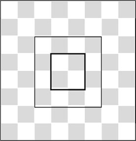
When we talk about the centre, we mean the squares d4, d5, e4 and e5. The squares around these: c3, c4, c5, c6, d6, e6, f6, f5, f4, f3, e3 and d3, are often just as important. In Chapter 11, we have seen that a pawn centre has special significance. Pawns standing side by side in the centre constitute a force that is sometime capable of rolling forward irresistibly, if nothing is put in their way. Aron Nimzowitsch emphatically brought the importance of the centre to our attention. A strong central position can be the justification for an attack on the flank, he claimed. The Teacher emphasized the importance of a stable position in the centre as a prerequisite for a flank attack. He also showed that the opposite is true as well. A sharp flank attack can be disrupted by a counterthrust in the centre. In My System, Nimzowitsch gives an example from his own practice.
SO 3.1 (C45)
1.e4 e5 2.♘f3 ♘c6 3.d4 exd4 4.♘xd4 d6 5.♘c3 ♘f6 6.♗e2 ♗e7 7.♗e3 ♗d7 8.♕d2 a6 9.f3 0-0 10.0-0-0 b5?!
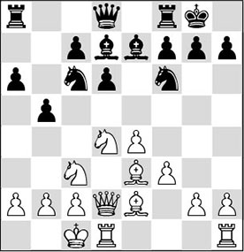
Black considers that the moment has come to start a flank attack. In this case, he has no strong centre position, and because of this, his action quickly falls through.
11.♘d5!
The flank attack is met by a central action, which disrupts Black’s play. Black’s intentions will come to nothing.
11…♘xd5 12.exd5
Slightly more accurate was 12.♘xc6 ♗xc6 13.exd5 ♗d7, since White can wait a while before deciding if he wants to continue with ♗e3-d4 or not.
12…♘xd4 13.♗xd4
Thus, not only have Black’s most important potential attacking pieces disappeared, but Black also has to contend with a substantial lack of space, as well as weak squares on the queenside. So his unjustified flank attack has completely backfired. White has a pleasant little plus.
13…♗f6 14.f4 ♖e8 15.♗f3
The strongly centralized white pieces makes it hard for Black to find counterplay. Moreover, his weaknesses on the queenside may turn against him now. According to Nimzowitsch, it is now the white player who is running the show.
Once you know the principle, it is not so hard to apply it in your own games.
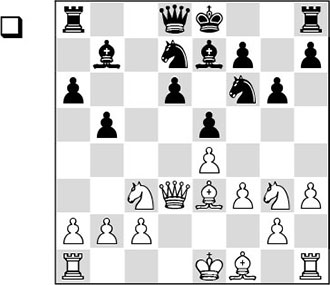
White has treated the opening a little peculiarly, and now he thinks he can permit himself an action on the flank as well. Since Black has just played …g7-g6 (to keep the knight from f5), White thinks that he now has the target he needs.
1.h4?!
This is an unjustified action, especially since White is not fully developed yet. His king is still in the centre, and his pieces are far from harmoniously placed. Necessary was 1.a3.
Black does not waste any time now, and makes his way through the centre.
1…b4 2.♘d1 d5! 3.h5
We have to grant the white player that he does continue consistently on his wrongly chosen path.
3…dxe4 4.fxe4 ♘c5
Black contents himself with a favourable endgame, because the pawn on e4 can hardly be protected anymore. An attractive alternative was 4…♕a5, preparing …♘c5 as well as …0-0-0.
5.♗xc5?!
This exchange is a huge concession. White gives up the dark squares ‘for free’, which makes him even more vulnerable than he already was.
5…♗xc5 6.♕f3 ♕b6 7.♗d3
More active was 7.♗c4.
7…0-0-0
Now Black is fully developed, and all his pieces are actively placed. On the other hand, White has problems with his king, which still remains in the danger zone. A related problem is that his a1-rook is doing nothing. The flank action h3-h4-h5, on which White had put so much hope, has come to nothing.
8.♖f1 ♖d6 9.♔e2
9.♘f2 is strongly met by 9…♕a5, preventing White’s castling.
9…♔b8 10.♘e3
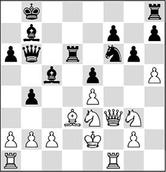
10…♗c8!
Now that the bishop has no employment on the a8-h1 diagonal for the moment, Black seeks work on the weakened white kingside. Here we can see another drawback of the h3-h4 thrust: the g4-square has become an annoying weakness.
11.♘c4
This does not help, but what else could we advise White here?
11…♕c7 12.♘xd6 ♗g4
This way Black wins a decisive amount of material.
13.♕xg4 ♘xg4 14.♘xf7 ♖f8 15.hxg6 hxg6 16.♘g5 ♗f2 17.♘h1 ♕b6 18.♘h3 ♕e3+ 19.♔d1 ♖f6 20.a4
The alternative 20.♘1xf2 ♖xf2 21.♘xf2 ♘xf2+ 22.♖xf2 ♕xf2 yields a position that is technically winning for Black.
20…♗h4 21.♖g1 ♗g5
0-1
In this chapter we will concentrate on two aspects of play in the centre:
21.2 Piece activity in the centre
21.3 Pressure exerted on the centre by pieces
21.2 Piece activity in the centre
In the early 1990s I was invited a few times to take part in the Aegon tournament in The Hague, where humans pitted their strength against computers (see also Chapter 6). We already know that computer technology has made enormous progress, which is certainly manifest with the current chess playing programs. In those days, we could still speak of an interesting contest.
Since the Man versus Machine tournament had a pleasant atmosphere, there was an interesting exchange of ideas between chess players and programmers. This was one of those rare occasions where you were allowed to talk during games, a chance which would be seized with both hands by both sides. When it was the computer’s move, the temptation to start a conversation with the operator was great. Both sides could profit from such conversations. The remarks of a strong chess player could be interesting for the programmer, but information about the structure of chess programs could also be of use for the human player.
I pricked up my ears when I heard about the experiment that two amateur programmers had conducted with their program. They had employed the ‘monster’ to automatically play through a large number of grandmaster games. During this process, the computer had to record how many squares in the enemy position were controlled by the winning side, especially in games by strong players. Attention was mainly turned towards the control of squares on the sixth, seventh and eighth (resp. third, second and first) ranks. The programmers also recorded to what extent pieces controlled the centre. It will be no surprise that there turned out to be a relation between the number of squares in the enemy camp that a side controlled, and the result of the game. The player with the greater control in the enemy camp emerged triumphant in many cases.
Centrally placed pieces will almost always control more squares in the enemy ranks than pieces that are not centrally placed. Since it is perfectly logical that from the centre, pieces can be easily employed all over the board, both programmers took this information into account when they wrote their chess program. In order to evaluate an arbitrary position as well as possible, the programmers awarded bonus points to pieces that were centrally placed or aimed at the centre. It is elementary knowledge that a piece (with the exception of the rook!) possesses more mobility on a central square than on a square at the edge of the board. This may sound logical, but in practice it turns out to be difficult. Many players neglect their central strategy in practice. In the next game we see that Jussupow consistently applies the principle of piece centralization, whereas his opponent commits a few errors in this area.
KI 12.5 (E93)
1.d4 ♘f6 2.♘f3 d6 3.c4 g6 4.♘c3 ♗g7 5.e4 0-0 6.♗e2 e5 7.d5
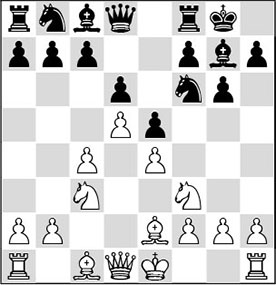
7…♘bd7?!
This knight move is no longer frequently played in grandmaster practice. More often, 7…a5 followed by …♘a6 is preferred. It is best for the knight to remain on a6 for as long as possible; it protects the pawn on c7 and hampers the b2-b4 and c4-c5 pushes for the time being.
8.0-0 ♘c5 9.♕c2 a5 10.♗g5 b6
Nowadays we know that Black should first put the question to the bishop with 10…h6.
11.♘d2 ♕e8 12.♘b5 ♘a6 13.a3 h6
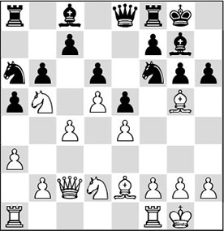
14.♗e3!
Now the bishop does not have to return to h4. On e3 it is ideally posted.
14…♘g4 15.♗xg4 ♗xg4 16.b4 ♗d7 17.bxa5 bxa5 18.♖ab1 f5 19.exf5 ♗xf5
Capturing with the bishop surrenders the important central e4-square, but 19…gxf5 also has its drawbacks. White can continue with 20.f3 or 20.f4, and in both cases he will have the upper hand.
20.♘e4
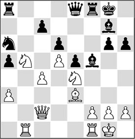
The knight settles on this beautiful central square and does not plan to leave it any time soon.
20…g5 21.f3 ♗h7 22.h3 ♕d7 23.♘bc3
White strengthens the position of his knight and prepares the doubling of his rooks on the b-file.
23…♔h8
Black is not able to do anything against the threat. For example, 23…♖fb8 does not bring any relief after 24.♖b5! ♖xb5 25.cxb5 ♘b8 26.a4, and both the backward pawn on c7 and the weak brother on a5 have become targets.
24.♖b5
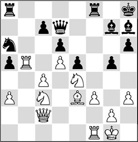
24…c6
Black settles for the loss of a pawn, as also after 24…♘b8 25.♖b7 White can choose how he wants to win material.
25.dxc6
With hindsight, 25.♖b6 would have been even stronger. After 25…cxd5 26.♘xd5, White exerts enormous pressure with his marvellously centralized pieces.
25…♕xc6 26.♘d5
A useful alternative was 26.♕d3 ♖fc8 27.♕xd6 ♕xc4 28.♖xa5, and also here, Black is reduced to a mere onlooker, while White further increases his advantage.
26…♖ac8
Now 26…♘c7? fails to 27.♖b6 ♕d7 28.♖b7, while 27…♗xe4 is no solution either after 28.♕xe4 ♕d7 29.♖b7 ♖ac8 30.♗b6, also winning material.
27.♖xa5 ♘b8 28.♖c1 ♖f7
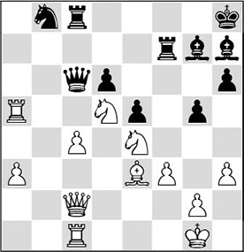
29.♕d3!
A beautiful example of centralization. The queen leaves the vulnerable c-file and indirectly aims one more piece at the d6-pawn. At the same time it keeps the e4- and d5-squares under control.
29…♗f8 30.♘b4 ♕e8 31.♖a8 ♕d8 32.♖d1 ♖d7
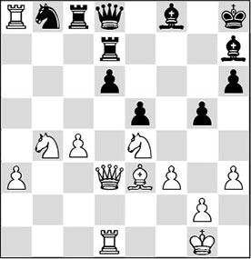
33.♘d5!
Again, Jussupow applies the principle of centralization. Black has immense trouble keeping his position together. By putting the knight on d5, White causes panic in the black camp. First of all, he threatens 34.♘b6.
33…♖b7 34.a4
White sets his extra a-pawn in motion.
34…♘d7 35.♖xc8 ♕xc8 36.a5
And in no time this pawn has become a tremendous trump card.
36…♕c6 37.♘b6 ♘f6 38.♘d5 ♘xe4?!
A bit curious. Clearly Black should have preferred to repeat moves with 38…♘d7, to see how White is planning to make progress. Logical continuations are 39.♖a1 – to push the a-pawn – or 39.♕e2, to move the queen out of the pin and prevent the black rook from penetrating on the second rank.
39.fxe4 ♕a4 40.♖f1 ♗g7 41.♗b6 ♗g6 42.♘e3
The knight leaves its central post in order to occupy another beautiful square: f5. At the same time, the knight clears the way for the queen, which gladly takes over the central role.
42…♕c6 43.♘f5 ♗f8 44.♕d5!
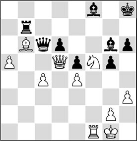
In turn, the queen occupies a dominant position on the d5-square. From here it is eyeing the king, as well as the queenside.
44…♕d7 45.c5!
Now that Black is completely deadlocked, White decides to liquidate to a winning endgame.
45…dxc5 46.♕xd7
1-0
After 46…♖xd7 47.a6, the a-pawn cannot be stopped by normal means.
21.3 Central activity by pieces in the endgame
In the endgame, pieces should also be centralized. Just as in the middlegame, the pieces can intervene quickly on the wings if they are standing in the centre. There is one aspect in which the treatment of the endgame differs materially from that of the middlegame: the activity of the king. As a rule, in the middlegame the king will be tucked away in a safe place, whereas in the endgame it can very well be involved in the struggle. When Donner beat the Yugoslav Velimirovic in the game below he provided the move ♔d4-e5 in his analysis with the following comment:
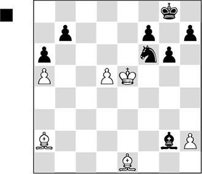
‘The king breaks through and the fighting-power of a king mounting the attack from behind the enemy pawns to my mind equals that of a full rook.’
This remark shows the importance a good grandmaster assigns to an active involvement of the king in the endgame. In the following game we see how Réti neatly puts his pieces in the centre. Despite far-reaching simplifications, he maintains his influence in the centre, so as to reap the harvest with his centralized king in the remote endgame.
EO 8.6 (A28)
1.c4 e5 2.♘c3 ♘f6 3.♘f3 ♘c6 4.d4
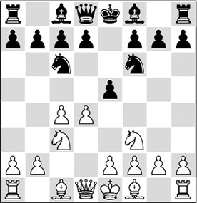
4…exd4
‘Surrender of the centre’, as we read in Nimzowitsch’s My System, in cases where such an exchange takes place. Black gives his opponent a free hand in the centre by acquiescing to this unfavourable exchange. Still, as Nimzowitsch himself also played such positions, he may have used the term ironically to mock Tarrasch’s use of the same phrase.
5.♘xd4 ♗b4 6.g3 ♘e5 7.♕a4 ♗c5?!
Much better is 7…♗xc3+, ruining the white pawn formation in exchange for giving up the bishop pair.
8.♗e3 ♗xd4
Now Black has to give up his bishop in far less favourable circumstances.
9.♗xd4 ♕e7 10.♗g2
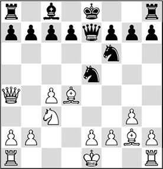
10…0-0?!
After this less than energetic continuation, Black hardly has any compensation for the concessions he has made in the opening.
Probably Black had set his sights on 10…♘d3+, but possibly by now he concluded that after 11.♔f1 the option 11…♘xb2? fails to 12.♕b3.
Still, he should have opted for the knight check. Although White is also better after 11…♘c5 12.♕c2, he does have to solve the problem of his king.
11.0-0 d6 12.♖fd1 c5
With this pawn move Black commits an ugly weakening of the d5-square.
13.♗xe5
Judging by today’s standards of positional play, White would have done better to keep the bishop pair with 13.♗e3. With the text move he gives up the bishop pair without a fight, and he solves Black’s backward pawn on d6 as well. However, what Réti does is principled: he wants to make optimal use of the d5-square without losing any time.
13…dxe5 14.♘d5
Also possible was 14.♖d2, to first increase the pressure along the d-file.
14…♘xd5 15.♗xd5 e4
Not an attractive pawn move, but it was more or less necessary, since otherwise White would be able to play e2-e4 sooner or later, after which the bishop on d5 would be the unassailable showpiece of his position.
16.♕b3!
The queen must be centralized. It strives for the square e3 and parries, en passant, Black’s possibly annoying …e4-e3 push.
16…♖b8 17.♕e3 ♗f5 18.♕f4 ♗g6 19.♖ac1 ♖fe8 20.♖c3
Again – centralization. The pawn on e4 is a target, since it is on the wrong colour for Black.
20…♔h8 21.♖e3 f5
Black is forced to make a new concession.
22.h4 ♖bd8 23.♔g2 ♕f6 24.♕c7?!
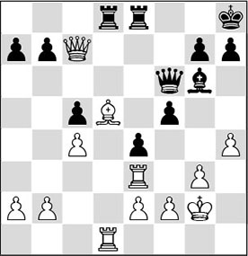
A curious move which, however, does not spoil anything. Réti should have preferred the immediate 24.♖d2, as now he unnecessarily hands Black an extra possibility.
24…♕e7?!
Black could have gone for the sharp 24…♕xb2, with the following forced sequence: 25.♖b3 ♕xe2 26.♖xb7 ♕f3+ 27.♔h3! ♕c3 28.♕xc5, and now Black will be in full contention in this sharp hand-to-hand fight after 28…f4!.
No relief is offered by 28…a5, as White replies 29.♕e3!, and the white c-pawn is very strong in combination with the strong bishop on d5.
28…e3 looks like a dangerous attempt at counterplay. After 29.fxe3 ♖xe3 30.♗f3! ♖de8 31.♖b3, however, White gains the advantage.
25.♕f4
More in keeping with the spirit of the position was 25.♕xe7 ♖xe7 26.f3 ♗f7 (26…exf3+ 27.♗xf3! ♖ed7 28.♖d5, and his centralized pieces give White the advantage) 27.g4 fxg4 28.fxe4, and here also, White has firm control in the centre.
25…♕f6 26.♕c7 ♕e7 27.♕f4 ♕f6 28.♖d2!
After some hesitation, Réti now decides to play for a win after all.
28…♖d7 29.♕g5! ♕xg5 30.hxg5
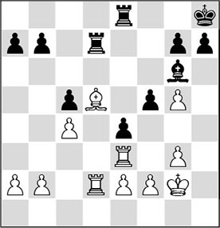
In this position, Black is in trouble because of the pressure that the white pieces exert on the black position from the centre. White’s bishop is still very dominant on d5, and White has the possibility to attack the enemy pawn structure with both f2-f3 and, eventually, g3-g4. Furthermore, it is important that the black king is cut off from the battlefield for the time being, whereas its white colleague will shortly make its presence felt in the centre.
30…♖ed8 31.f3 ♖e7?
With this mistake Black jumps from the frying pan into the fire. The pin along the e-file is unpleasant, as we shall see. Better was 31…exf3+, although after 32.exf3 ♗f7 33.♖e5 g6 White would have built up a super-central position!
32.♖d1 ♗f7
Understandably, Black wants to do something about the strong white bishop, but this worsens his position.
33.g4!
Otherwise this would not have been possible, since with the bishop on g6 Black would have had the reply …f5-f4.
33…g6 34.♔g3 ♖f8 35.♔f4!
Réti knows no fear. Who would put his king on the same file as an enemy rook? However, White’s intention is to centralize the king, in view of the approaching endgame. At the same time he rules out a tactical finesse: …♗xd5 followed by …f5-f4+.
There is not a single tactic with which Black can exploit the vis-à-vis of his rook with the white king.
35…b6
Bohatirchuk takes a modest stance with this waiting move. Attempts to become active would run up against a cunning reaction, as the following variations show:
A) 35…fxg4 36.♔xg4 ♗xd5 37.cxd5 ♖d8 38.♖xe4, and White wins;
B) 35…♗e6 36.♗xe6 ♖xe6 37.gxf5! ♖xf5+ (37…gxf5 38.♖d7 is already virtually decisive) 38.♔g4 ♖f7 39.♖xe4 ♖xe4+ 40.fxe4, and the passed e-pawn will decide the issue.
36.gxf5 gxf5 37.♗xf7 ♖exf7 38.♖d5
Still better was 38.♖d6.
38…♖e7 39.♖e5!
It is interesting to see how Réti manages to increase his undeniable advantage step by step. The exchange of one pair of rooks favours him.
39…♖xe5
Black has to swap, as after 39…♖ef7 40.fxe4 fxe4+ 41.♔xe4 ♖f4+ 42.♔d3 ♖d8+ 43.♔c3, White has a healthy extra pawn.
40.♔xe5 exf3 41.exf3 ♔g7 42.♔f4 ♖f7 43.♖e5 ♔g6?!
Slightly more tenacious was 43…h6 44.♖xf5 ♖e7.
44.♖e6+ ♔g7
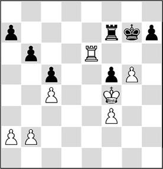
45.b3!
Zugzwang! Black has to let go of the f-pawn.
45…♔g8
The attempt to become active with 45…♖d7 is doomed to failure after 46.♔xf5 ♖d2 47.♖e7+ ♔g8 48.♖xa7.
46.♖e5 ♔g7 47.♖xf5 ♖d7 48.♖d5
Preventing any possible counterplay.
48…♖f7+ 49.♔g4 h6 50.f4 ♖e7
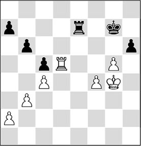
51.f5!
This forces the decision. Black has no counterplay whatsoever, while the f-pawn is marching on irresistibly. The rest is no problem at all for Réti.
51…hxg5 52.♔xg5 ♖f7 53.♖d6 ♖c7 54.♖g6+ ♔f8 55.f6 ♖d7 56.♖h6 ♖d2 57.♖h8+ ♔f7 58.♖h7+ ♔e6 59.♖e7+ ♔d6 60.♖xa7 ♖g2+ 61.♔f5 ♔c6 62.f7 ♖f2+ 63.♔e6
1-0
21.4 Piece pressure on the centre from a distance
So far, we have exclusively looked at examples where the pieces were in the centre and were deployed from there to perform a certain task elsewhere on the board. Sometimes, pieces do not have to be in the centre to fulfil such functions. We already know that some pieces work better from a distance. A bishop on a long diagonal is better when it exerts its influence on the central squares from a distance.
In the 1920’s, Réti was a player who had a clear preference for fianchettoing his bishops. He opined that in the opening it is not necessary to occupy the centre with pawns immediately. ‘The pieces can do a good job exerting this control just as well’, was his philosophy. We give you the following model performance by Réti.
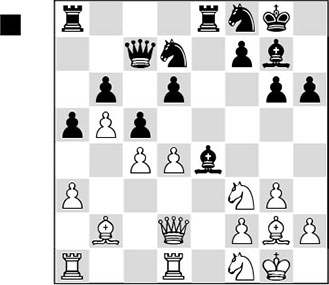
White has a little more space and his pieces can be deployed more easily than Black’s.
1…cxd4?!
Black releases the tension in the centre, which is a signal that he does not like the position one bit. A neutral move like 1…♖ad8 or 1…♖e7 looked better.
2.♗xd4 ♕xc4
This was Black’s intention, but he has wrongly assessed the consequences of the liquidation.
3.♗xg7 ♔xg7 4.♕b2+ ♔g8 5.♖xd6
White has his pawn back, and he has made considerable progress. Especially his major pieces are significantly better placed than Black’s. The latter’s queen is vulnerable, while his rooks are also hardly functional.
5…♕c5?!
After the modest 5…♕c7 6.♖ad1 ♖ad8 7.♕d4 ♗b7, the black position still seems defensible, although after, for instance, 8.♕f4, White would also have good prospects.
6.♖ad1 ♖a7 7.♘e3!
Réti brings a new piece into the game. The knight threatens to be deployed against the enemy king via g4.
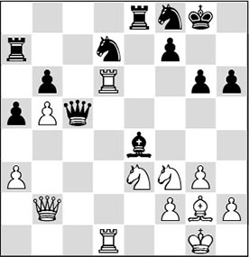
7…♕h5
Not a pleasant move to make. Apparently, Capablanca doesn’t find a satisfactory solution for the problem he is confronted with, and therefore decentralizes his queen. There were several alternatives to deal with the threat of ♘e3-g4:
A) 7…h5 is relatively best, but this means yet another weakening of his already damaged king position. After this move, 8.h4!?, preparing ♘f3-g5, looks like a good possibility for White;
B) 7…♖e6?! looks logical. Black wants to force the intruder on d6 to declare its intentions, and at the same time tries to give extra protection to the weak square f6. Unfortunately, there is a snake in the grass: 8.♖xe6 ♘xe6 9.♘g4!, and White wins at least a pawn. For example, 9…♔h7?? fails to 10.♖xd7 ♖xd7 11.♘f6+ and White wins the house;
C) 7…♗xf3?! is a rather radical solution, with the intention of having the black knight join the fight after 8.♗xf3 ♘e5. After 9.♗c6!, however, Black’s problems have only increased.
8.♘d4!?
Merrily continuing his centralization policy. The knight strives for the strong square c6. Réti could have crowned his centralization strategy more radically with 8.♖1d5!. The intention is to cut off the queen, as after 8…♗xd5 9.g4 the queen is trapped!
8…♗xg2 9.♔xg2 ♕e5
Capablanca cannot move a muscle. He can hardly improve the positions of his pieces. The knights are tied to their squares, which also prevents Black from involving his rooks in the struggle. Here we see another example of the ‘lack of harmony’ that we dealt with in Chapter 19. The only piece that Black can move is the queen.
It would not have been so unwise to sacrifice an exchange. With 9…♖xe3 10.fxe3 ♘e5 Black could have put up a defensive wall, which is not easy to breach.
10.♘c4
Disorganizing the black position even more.
10…♕c5
Here the queen is very exposed, but 10…♕e4+ was no solution in view of 11.f3 ♕b7 12.♘c6 ♖aa8 13.♕d2!, and White strikes home.
11.♘c6
Réti has a tough choice between many good options. After 11.♖c6 ♕h5 12.♖d2, Black is more or less forced to play 12…♖b8, after which his efforts are becoming pathetic.
11…♖c7
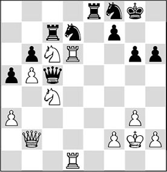
12.♘e3!?
Knights need footholds. Here we can see that both white knights have found a foothold in an entirely open position. It is a pity that Réti loses his sense of the aesthetic here. The super-centralization 12.♖1d4!! was not only optically very pretty, but actually also by far the best move. After, for example, 12…♕f5 13.♘e3, 13…♖xe3 is more or less forced, but also here any salvation is far off for Black.
12…♘e5?!
An act of despair. Now White has several ways to end the game. If he had wanted to prolong the struggle, Capablanca would have had to make use of another exchange sacrifice: 12…♖xe3 13.fxe3 ♕xe3. True, he would have obtained one pawn in return, but since his pieces are not working, his task would have been difficult here as well.
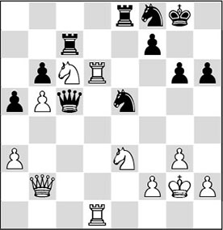
13.♖1d5
And here Black gave up. There could have followed: 13…♘c4 14.♖xc5 ♘xb2 15.♖c2, and since both ♖xb2 and ♘d5 followed by ♘f6+ are threatened, Black has to give material with 15…♖xe3 16.fxe3 ♘a4, and now it is definitely over after 17.♖c4 ♘c5 18.♘xa5.
More in style and, again, more aesthetic would have been 13.♕a1!, when the threat of 14.♖1d5 can no longer be met by normal means: 13…♘c4 14.♘g4, and it is all over.
Exercises
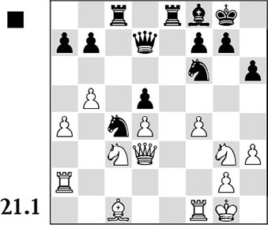
What does Black play in order to increase his influence on the centre?
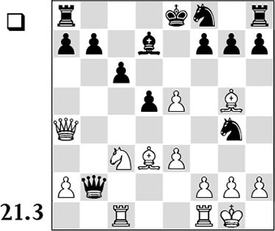
The black pieces seem to be lacking in coordination. By what means can White try to exploit this?
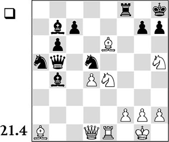
The black pieces are rather tucked away on the queenside. White would like to adapt his play to this. How did he do that?